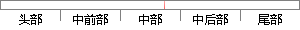

用户模块主要包括用户的注册、登录、忘记密码和个人中心设置四个子模块。
片段位置图

相似结果|
相似片段 1：用户注册登录成功界面注册成功界面4.4.2 个人中心管理模块个人中心管理模块 HIPO 包含更改头像、更改密码、账号设置、申请讲师四个子功能模块，如图 4.5 所示的是个人中心管理模块 H 图。30图
相似片段 2：用户注册模块以及用户登录模块实现的功能比较直观，分别实现新用户注册功能以及老用户的登录、密码验证功能。个人中心模块主要实现对于个人资料的查看、修改、储存等功能。其中个人资料包括两块，分别是个人资料
相似片段 3：子模块主要包括添加用户、修改密码、重新登录和退出系统等四个部分。添加用户：向系统添加新增用户，并设置密码和相应的权限。修改密码，为已注册用户提供修改密码的功能。重新登录，更改用户身份登录。退出系统，点击
|
※ 片段修改建议 ※
近似词参考：- 主要：首要 重要
- 包括：包罗 包孕 包含 囊括
- 忘记：健忘 忘掉 遗忘 忘怀
- 密码：暗码
- 个人：小我 小我私家
- 中心：中间 中央
系统自动生成语句：用户模块首要包罗用户的注册、登录、健忘暗码和小我中间设置四个子模块。
注：本片段修改建议为系统自动生成，仅供参考。